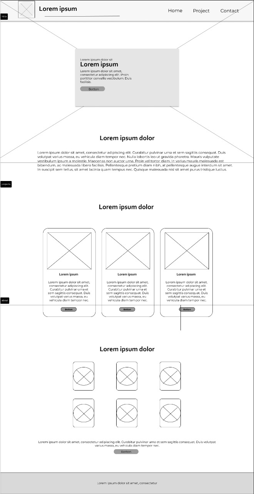
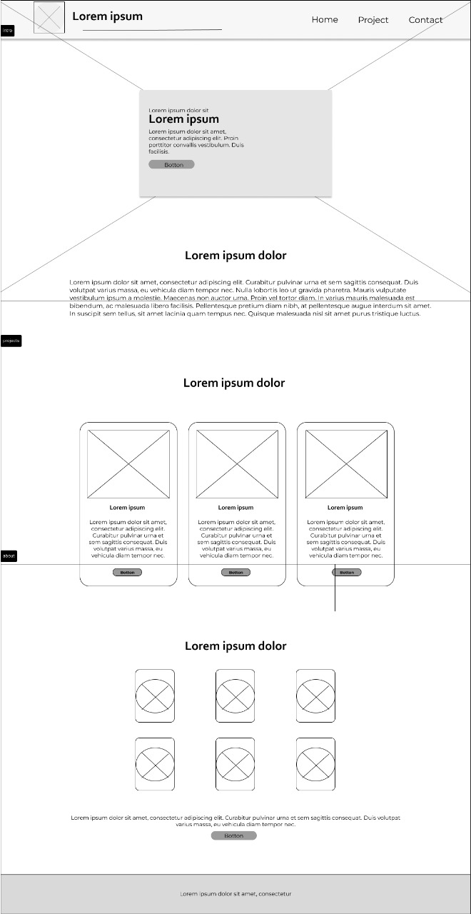

Dashboard: Defined
I chose to work on Dashboard project because i regard them as useful on the basis that they help for monitoring, measuring and analyzing relevant data in key areas. They take raw data from many sources and clearly present it in a way that it is highly tailored to the viewer's needs, regardless of you who you are, be it you are a business leader, line of business leader, line of business analyst, sales representative or teacher
Contents
1. Profile
2. Settings
3. Projects
4. Plans
5. Courses
6. Plans etc
Overview:
1. They provides at a glance2. Saves time and resources.
3. Improves decision making.
4. Easy performance checks and balances.
5. Up-to-date progress evaluation.
6. Dashboards reporting needs meaningful metrics.
Wireframes
 
